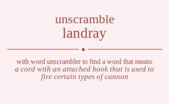

Do you wonder how many words you can made out of letters landray. To unscramble landray we can search against each letter in landray and find meaningful words in dictionary. You can use this word list to cheat word games. Unscramble word cheat is one of the things you can do by using our site.
The word found after unscrambling landray means that
a cord with an attached hook that is used to fire certain types of cannon,
a cord worn around the neck to hold a knife or whistle,
(nautical) a line used for extending or fastening rigging on ships,
.
